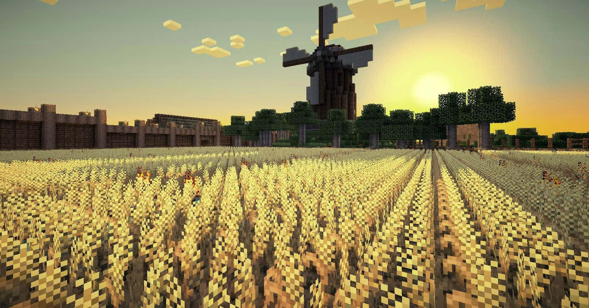

Do campo a cidade
Isso é um tema extremamente complexo, esse tema se refere a migração de moradores do compo para áreas urbanas, sendo o objetivo delas uma possivel busca por uma vida melhor, com mais qualidade e oportunidades de emprego.
do campo à cidade, colher oportunidades é um equilíbrio delicado entre preservar as raízes e explorar novos horizontes. É encontrar um caminho que honre as origens enquanto abraça o potencial transformador de novos ambientes. Cada pessoa que faz essa jornada contribui para a riqueza e diversidade das comunidades urbanas, trazendo consigo uma bagagem única de experiências e perspectivas. Assim, a migração do campo para a cidade não é apenas uma mudança geográfica, mas uma busca por crescimento pessoal e a realização de sonhos que transcendem fronteiras físicas.

Quando pessoas do campo se mudam para a cidade grande, elas frequentemente enfrentam uma série de desafios e problemas, incluindo:
Cultura urbana: Adaptar-se a uma cultura diferente pode ser difícil, especialmente se as normas sociais e comportamentais são muito diferentes das do ambiente rural.
Custo de vida elevado: As cidades grandes geralmente têm um custo de vida mais alto, o que pode ser um choque para quem está acostumado com despesas mais baixas no campo.
Dificuldades de habitação: Encontrar moradia acessível pode ser complicado, já que o mercado imobiliário urbano tende a ser mais competitivo e caro.
Transporte público: Dependendo da cidade, pode ser difícil se ajustar ao sistema de transporte público, que é muitas vezes mais complexo e movimentado do que no campo.
Isolamento social: Apesar de haver mais pessoas ao redor, é comum sentir-se isolado em uma cidade grande devido à falta de conexões comunitárias que são típicas em áreas rurais.
Poluição e qualidade do ar: A poluição atmosférica e sonora nas cidades grandes pode ser um choque para quem está acostumado com ar limpo e tranquilidade no campo.
Estresse e ritmo de vida acelerado: O estilo de vida agitado das cidades pode ser estressante para quem está acostumado com um ritmo mais calmo no campo.
Falta de espaços verdes: A escassez de áreas verdes e espaços abertos pode ser difícil para quem aprecia a natureza e o ar livre.
Diferenças no acesso a serviços: Serviços como saúde, educação e lazer podem ser mais acessíveis no campo, enquanto na cidade grande podem ser mais caros ou difíceis de acessar.
Adaptação ao ambiente urbano: Questões como segurança pessoal, padrões de comportamento público e interações sociais podem ser diferentes e exigir ajustes.
Esses problemas variam dependendo da cidade específica para onde alguém se muda e das experiências individuais, mas são comuns para muitas pessoas que fazem a transição do campo para a cidade grande.
